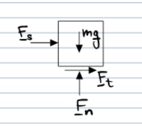

A Rigorous Definition of Friciton
Most of us have seen friction as a more-or-less mysterious force that opposes motion. We put it in our Free Body Diagrams and we put it in our F = ma sumations, but is friction really that simple? What if the floor that the friction force interacts with is moving? Or what if every object in the system is moving? How can we define friction then? Let's answer that.
Simple Friction
First lets start off with a definition of velocity: \(\mathbf{v}_s = \mathbf{v} - \mathbf{v}_\text{wall}\)
Where \(\mathbf{v}_s\) is the velocity of the whole system, \(\mathbf{v}\) is the velocity of a single object, and \(\mathbf{v}_\text{wall}\) is the velocity of the "wall" or floor the object rests on. Now we can define friction given different values of \(\mathbf{v}_s\).
If \( |\mathbf{v}_s| > 0 \), then \(\mathbf{F}_t = -\mu F_n \frac{\mathbf{v}_s}{|\mathbf{v}_s|}\)
If \( |\mathbf{v}_s| = 0 \), then \(|\mathbf{F}_t|\ \leq F_n \)
Often we model \(\mu\) to be a function of \(|\mathbf{v}_s|\)
\(\mu = \mu_s\) if \( |\mathbf{v}_s| = 0 \) "Static Friction"
\(\mu = \mu_d\) if \( |\mathbf{v}_s| > 0 \) "Dynamic Friction"
Where \(\mu_s > \mu_d\)
Rigorously Defined Friction
The definition above is incomplete because it does not determine \(\mathbf{F}_t\) when \(|\mathbf{v}_s| = 0\), nor does it give the direction of \(\mathbf{F}_t\) the instant sliding first begins.
Lets add two resonable assumtions to resolve this:
Assumption 1:
If \(\mathbf{v}_s = 0\) and the value of \(\mathbf{F}_t\) that would make \(\dot{\mathbf{v}}_s = 0\) satisfies \(|\mathbf{F}_t| \leq \mu_s F_n\), then \(\mathbf{F}_t\) takes that value.
In math: Define \(\mathbf{F}^*\) as the sum of all forces EXCEPT for \(\mathbf{F}_t\). So \(\mathbf{F}_t^* = \mathbf{F}^* - (\mathbf{F}^* \cdot \mathbf{e}_n)\mathbf{e}_n\) is the projection of \(\mathbf{F}^*\) onto the plane.
Hence, the force needed for \(\dot{\mathbf{v}}_s = 0\) is:
If \(|\mathbf{F}_\text{trial}| \leq \mu_s F_n\), accept it as correct.
Finally we can say if \(|\mathbf{v}_s| = 0\) and \(|\mathbf{F}_\text{trial}| \leq \mu_s F_n\) then \(\mathbf{F}_t = \mathbf{F}_\text{trial}\)
Assumtion 2:
If \(\dot{\mathbf{v}}_s\) and the value of \(\mathbf{F}_t\) that would make \(\dot{\mathbf{v}}_s = 0\) satisfies \(|\mathbf{F}_t| > \mu_s F_n\), then \(|\mathbf{F}_t| = \mu_s F_n\) and \(\mathbf{F}_t\) points in the direction that minimizes \(\dot{\mathbf{v}_s\) starts sliding.
This is also equivalent to saying we pick \(\mathbf{F}_t\) by scaling down \(\mathbf{F}_\text{trial}\) to a length of \(\mu_s F_n\)
In math:
If \(|\mathbf{v}_s| = 0\) and \(|\mathbf{F}_\text{trial}| > \mu_s F_n\), then \(\mathbf{F}_t = \mu_s F_n \frac{\mathbf{F}_\text{trial}}{|\mathbf{F}_\text{trial}|}\).
Friction in action
If the block starts at rest and the spring begins unloaded, how does the block move?
Step One:
Use cartesian with O at initial location of spring's back end.
Step Two:
Force Body Diagram
Step Three
Sum the forces using Newtons Second Law and then solve.
This can be simplified to
Balancing both sides of the equation gives us:
In this case, \(\mathbf{v}_\text{wall} = 0\) so \(\mathbf{v}_s = \dot{x}\mathbf{e}_x\) and \(\mathbf{F}_\text{trial} -\mathbf{F}_t^* = -\mathbf{F}_s\)